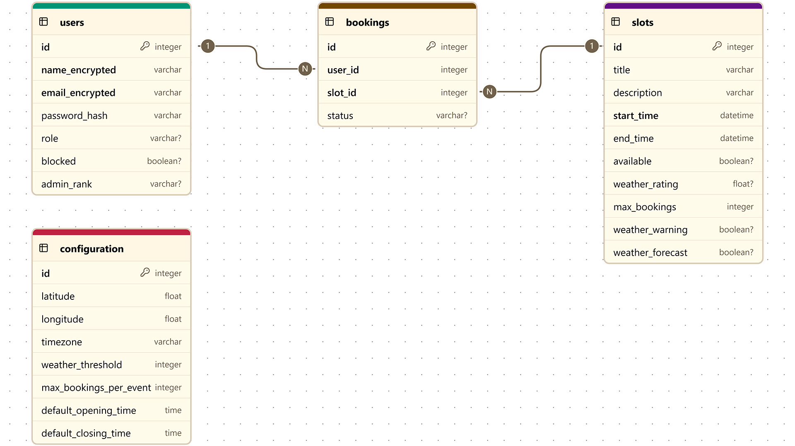

System Architecture#
Overview#
The Observatory Booking Web App is a modular Flask web application that supports secure, weather-aware event scheduling. It is structured with a service-oriented architecture (SOA), where responsibilities are cleanly separated into services, routes, and utility modules. The application supports user authentication, booking management, real-time weather evaluation, and administrative control.
The system uses SQLAlchemy ORM for data persistence, APScheduler for background tasks (e.g., weather updates), and Tailwind CSS for a modern, responsive user interface.
Component Diagram#

Key Components#
Flask Application Core - Initializes the app instance with environment-based configuration. - Registers routes via blueprints. - Manages secret keys, CSRF protection, secure session cookies, and logging. - Selects server runtime: Flask (development) or Waitress (production).
Routes (app/routes/)
Modular route files for domain-specific views:
authentication.py: User login, logout, registration.
admin_dashboard.py: Admin panel and configuration tools.
user_actions.py: Booking and cancellation logic.
Centralized registration is handled in blueprint.py.
Service Layer (app/services/)
Encapsulates business logic, validates operations, and manages transactions:
UserService: Manages users actions, validation, password hashing.
AdminService: Config updates, event creation, user management.
BookingService: Event booking/cancellation with rate limiting and locking.
WeatherService: Fetches weather data, evaluates event suitability.
Database Models (app/models.py)
SQLAlchemy models:
User: Encrypted PII, hashed passwords, roles.
Slot: Time-bound events with weather metrics.
Booking: Links users to slots.
Configuration: System-wide settings.
Uses AES encryption for PII, bcrypt for passwords, and ORM relationships.
Utilities (app/utils.py) - Environment variable management. - Encryption utilities (AES). - Rate limiting with in-memory counters. - Caching (TTL) for repeated function calls (e.g., weather). - Logging setup.
Templates and Static Files - Jinja2 templates under templates/ for user, admin, and error pages. - Tailwind CSS compiled styles, JavaScript interactivity in static/.
Weather Integration - Powered by Open-Meteo API. - Evaluates hourly data: cloud cover, precipitation, visibility. - Automatically rates events and flags poor conditions. - Background updates every 3 hours with caching.
Database Diagram#

Concurrency and Thread Safety#
Scoped SQLAlchemy sessions ensure isolated transactions per thread.
Locking mechanism ensures safe concurrent access to sensitive operations (e.g., booking, user updates).
APScheduler runs weather updates in a background thread; proper shutdown is managed with atexit.
Security Features#
PII Encryption: AES-encrypted name and email fields.
Password Hashing: bcrypt-based secure password storage.
Session Security: Configurable CSRF, secure cookies, and secret keys.
Rate Limiting: 10 requests per 20 seconds per user for login, bookings and cancellations.
Logging: Tracks user actions, admin updates, and system errors.
Deployment Considerations#
Default database: SQLite (development); PostgreSQL supported for production.
Server: Flask built-in (development), Waitress or Gunicorn (production).
Configurable via .env for host, port, keys, CSRF, logging.
Tailwind assets built via npm run build; deployable with CDN or local serving.
Extensibility and Maintenance#
Modular structure enables easy extension of services and routes.
DTOs (data_transfer_objects.py) ensure clean data flow and validation.
Conclusion#
This architecture ensures a resilient, secure, and maintainable system for observatory booking, suitable for self-hosting, institutional deployment, or integration into larger observatory management systems. The modular design allows for customization and scaling to meet varied operational requirements.